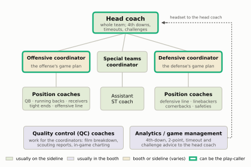
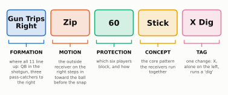
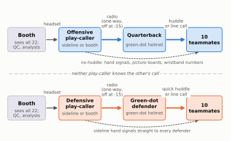
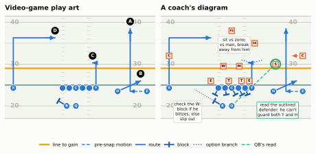

It isn’t picking a card in Madden: who chooses the play, how it reaches eleven players in forty seconds, and why it is a set of rules rather than a set of lines.
Show the Python (shared drawing helpers for this chapter)
import osimport textwrapimport numpy as npimport pandas as pdimport matplotlib.pyplot as pltfrom matplotlib import animationfrom matplotlib.lines import Line2Dfrom matplotlib.patches import FancyBboxPatch, FancyArrowPatch, Rectangle, Patchfrom IPython.display import HTML, Markdown, displayfrom gridiron import Play, Player, offense, defense, routes as r, show_animation, stylestyle.apply()PDF = os.environ.get("RTG_FORMAT", "").lower() in ("pdf", "typst", "print")def box(ax, x, y, w, h, text, fc=style.SURFACE, ec=style.BASELINE, lw=1.0, fs=8.5, bold=False, color=style.INK, ls="-", sub=None, sub_fs=7):"""A rounded box centred on (x, y) in data units, with an optional smaller subtitle.""" ax.add_patch(FancyBboxPatch((x - w /2, y - h /2), w, h, boxstyle="round,pad=0.02,rounding_size=1.2", fc=fc, ec=ec, lw=lw, ls=ls, zorder=3))if sub: ax.text(x, y + h *0.17, text, ha="center", va="center", fontsize=fs, color=color, fontweight="bold"if bold else"normal", zorder=4) ax.text(x, y - h *0.22, sub, ha="center", va="center", fontsize=sub_fs, color=style.INK_2, zorder=4, linespacing=1.15)else: ax.text(x, y, text, ha="center", va="center", fontsize=fs, color=color, fontweight="bold"if bold else"normal", zorder=4, linespacing=1.2)def arrow(ax, p0, p1, color=style.INK_2, lw=1.3, ls="-", rad=0.0, text=None, toff=(0, 1.6), fs=7): ax.add_patch(FancyArrowPatch(p0, p1, arrowstyle="-|>", mutation_scale=11, color=color, lw=lw, ls=ls, shrinkA=2, shrinkB=2, connectionstyle=f"arc3,rad={rad}", zorder=2))if text: mx, my = (p0[0] + p1[0]) /2+ toff[0], (p0[1] + p1[1]) /2+ toff[1] ax.text(mx, my, text, ha="center", va="center", fontsize=fs, color=style.INK_2, zorder=5, linespacing=1.15, bbox=dict(boxstyle="round,pad=0.2", fc=style.SURFACE, ec="none"))def blank(ax): ax.set_axis_off() ax.grid(False)def html_video(anim):"""Embed a matplotlib animation in the HTML build (mp4 if ffmpeg exists, else JS player)."""import shutilif shutil.which("ffmpeg"): html = anim.to_html5_video(embed_limit=40).replace("<video ", '<video style="max-width:100%;height:auto" ')else: html = anim.to_jshtml(default_mode="once") plt.close(anim._fig) display(HTML(html))# --- Predict-the-play answers: collapsed under each drill on the web, collected at the end in printANSWERS = []def answer(md): ANSWERS.append(md.strip())if PDF:print('\n*Answer: try it first, then see "Answers to Predict the play" at the end of the chapter.*\n')else:print('\n::: {.callout-tip title="Answer" collapse="true"}\n\n'+ md.strip() +"\n\n:::\n")def dashed_motion(p, key, to, head=0.5):"""Pre-snap motion to the spot `to`, split so it draws dashed. (gridiron draws the last segment of a path as a solid arrow, so a one-segment motion would look like a route.)""" pl = p.players[key] dd, dw = to[0] - pl.d, to[1] - pl.w f =max(0.0, 1- head /float(np.hypot(dd, dw))) p.motion(key, pts=[(dd * f, dw * f), (dd, dw)])# --- The chapter's one play: Gun Trips Right Zip 60 Stick X Dig, against a 4-2-5 nickel in Cover 3def stick_base(with_defense=True, motion="draw", go_len=15, dig_width=10):"""motion: "draw" = show Z's Zip motion (and the corner bumping with it); "after" = players already at their post-motion spots, no motion drawn; None = no motion.""" off = offense("gun_trips") off = [p.moved(w=-2.2) if p.key =="RB"else p for p in off]if motion =="after": off = [p.moved(w=13.0) if p.key =="Z"else p for p in off] dfn =Noneif with_defense: dfn = defense("nickel", "single_high", off)# Cover 3 corners play 7-8 yards off; the safety to the trips side is a curl defender at ~10 adj = {"SS": dict(d=10.0, w=5.5), "LCB": dict(d=7.0), "RCB": dict(d=7.0)}if motion =="after": adj["RCB"] =dict(d=7.0, w=14.5) dfn = [p.moved(**adj[p.key]) if p.key in adj else p for p in dfn] p = Play(off, dfn, los=35, to_go=4)if motion =="draw": dashed_motion(p, "Z", (-1.5, 13.0))if with_defense: dashed_motion(p, "RCB", (7.0, 14.5)) # the Cover 3 corner bumps in with the Zip motion p.route("Z", r.go(go_len)) p.route("H", r.arrow(depth=2.5, width=5.5)) p.route("Y", r.stick(6)) p.route("X", r.dig(12, dig_width))return pdef protect_60(p, block_depth=1.6):"""'60': half-slide right (C, RG, RT take the gap to their right), LG and LT block the man over them, and the back checks the weak side (the Will) before slipping out."""for k, dw in [("LT", -0.8), ("LG", 0.3), ("C", 0.9), ("RG", 0.9), ("RT", 0.6)]: p.block(k, pts=[(-block_depth, dw)]) p.block("RB", pts=[(1.2, -2.0)])def rush4(p, block_depth=1.6, gap=1.7):"""Four-man rush that ends engaged just in front of its blocker (not past him).""" pairs = {"WDE": ("LT", -0.8, -0.3), "WDT": ("LG", 0.3, 0.0), "SDT": ("RG", 0.9, 0.0), "SDE": ("RT", 0.6, 0.3)}for k, (blk, dw, outside) in pairs.items(): b, d = p.players[blk], p.players[k] end = (b.d - block_depth + gap, b.w + dw + outside) p.rush(k, pts=[(end[0] - d.d, end[1] - d.w)], speed=2.2)C3 = {"LCB": (14.5, -15.0), "FS": (15.0, 0.0), "RCB": (14.5, 15.0),"WILL": (8.0, -5.0), "MIKE": (8.0, 1.0), "SS": (10.5, 8.0)}# (center, (depth extent, width extent), label): where each Cover 3 defender's area liesC3_ZONES = [((15.5, -10.5), (4.5, 9), "deep third"), ((15.5, 0.0), (4.5, 12), "deep middle"), ((15.5, 11.0), (4.5, 9), "deep third"), ((8.5, -6.5), (4, 8), "hook-curl"), ((8.5, 1.5), (4, 6), "hook"), ((11.5, 8.8), (3, 5), "curl"), ((1.8, 15.5), (3, 6), "flat")]def cover3_drops(p, nb="widen", zones=False):for k, to in C3.items(): p.drop(k, to)if nb =="widen": p.drop("NB", (4.0, 15.0), speed=6.0)else: p.drop("NB", (4.6, 6.2), speed=6.0)if zones:for center, size, lab in C3_ZONES: p.zone(center, size, lab)
Third-and-4, late in the third quarter. Before the offense has even huddled, the camera finds the offensive coordinator on the sideline: a headset, a laminated sheet the size of a restaurant menu, and the sheet held up over his mouth while he talks. Across the field the defensive coordinator is doing the same thing. Twenty seconds later the quarterback is at the line, pointing at a linebacker and shouting a word that sounds like a city. The play clock reads 3 when the ball is snapped. If your idea of “a play” comes from choosing a card in a video game, almost nothing in that sequence makes sense. Who picked the play? Why hide your mouth? Why point at a linebacker? This chapter answers those questions, and starts on the shouting, which the next chapter finishes. By the end, a play will look less like a single choice and more like what it is: a message passed down a chain of people in under forty seconds, then carried out by eleven players who each follow their own rules and make their own reads.
You’ll be able to…
Trace a play from the coach’s sheet to the snap: call sheet, play-caller, helmet radio, quarterback or “green-dot” defender (the one defender with a radio in his helmet), huddle or signals, snap.
Name who is on an NFL coaching staff, who actually calls the plays, and why some coaches sit in a booth upstairs.
Split a play call, pass or run, into its parts (formation, motion, protection, concept, tags) and say what each part tells the players.
Explain the 40-second play clock, why the coach’s voice cuts out at 15 seconds, and what delay of game is.
Explain why both play-callers choose blind to each other’s call, and why that turns the seconds before the snap into a contest.
Watch the few seconds after the snap as eleven separate jobs, some of them decided by reads, rather than as one scripted movie.
The video-game picture, and why it’s wrong
Most people who come to football through a video game carry the same mental model. The game pauses. A menu of plays appears, each drawn as a neat diagram with an arrow for every receiver. You pick one. Your opponent, at the same moment, picks a defense from his own menu. Then the play “runs”: the computer moves ten of your players along their arrows while you steer one of them.
Parts of that are true. There really is a menu (it’s called the call sheet). Somebody really does pick one play per snap, the moment the center hands or tosses the ball back between his legs to the quarterback (or another back), which starts every play. And neither side sees the other’s choice before making its own. That last point matters a great deal, and we’ll come back to it.
The rest of the picture is wrong in ways that hide most of what makes football interesting:
The person choosing the play isn’t on the field. In the NFL, a coach chooses almost every play, and the players learn which one through a radio in a single helmet.
There is a clock. Picking the play, telling eleven men about it and getting them lined up all has to fit inside forty seconds.
The arrows aren’t paths. On a real play diagram, most lines stand for rules: “run to six yards, then settle if the defenders are guarding areas, keep moving if one is following you.” The quarterback isn’t told where to throw. He is told whom to watch.
One call is many plays. Because the players react to what the defense does, the same call can end with the ball going to three different people.
NoteMadden vs. real life
In Madden you are the play-caller, the quarterback and, in a sense, the other ten players. In the NFL those are different people with different information. The play-caller (a coach) knows the down, the distance, the score and which players each side has sent on, but must choose before he sees how the defense lines up. The quarterback sees the alignment but gets only a few seconds, and he is the only one who can change the play (the center can adjust the blocking and receivers adjust routes by rule, but neither can swap the play). Each of the other ten knows his own assignment and the rule that adjusts it, and little about the teammate beside him. That gap between what each person knows is where most of football’s strategy happens.
Who’s in the building: the coaching staff
Before we follow a play call from the sheet to the field, we need to know who writes the sheet. An NFL coaching staff is far bigger than most viewers realize. A typical team lists somewhere around twenty to twenty-five on-field coaches, and on top of that come strength coaches, video staff, analysts and scouts.1 On game day they split into two places: the sideline, where you see them on TV, and the coaches’ booth, a glassed-in room at press-box level high above the field.
Show the Python
fig, ax = plt.subplots(figsize=(6.5, 4.6))blank(ax); ax.set_xlim(0, 100); ax.set_ylim(0, 66)SIDE, BOOTH, EITHER ="#e3ecd7", "#e6e4ef", "#f3ead2"CALLER =dict(ec=style.THIRD, lw=2.4)box(ax, 50, 58, 30, 9, "Head coach", fc=SIDE, bold=True, fs=10, sub="whole team; 4th downs,\ntimeouts, challenges", **CALLER)box(ax, 18, 41, 31, 9, "Offensive coordinator", fc=EITHER, bold=True, fs=8, sub="the offense's game plan", **CALLER)box(ax, 79, 41, 31, 9, "Defensive coordinator", fc=EITHER, bold=True, fs=8, sub="the defense's game plan", **CALLER)box(ax, 48.5, 41, 23, 9, "Special teams\ncoordinator", fc=SIDE, bold=True, fs=8)for x in (18, 48.5, 79): ax.plot([50, x], [53.5, 45.5], color=style.BASELINE, lw=1.2, zorder=1)box(ax, 18, 25, 31, 10, "Position coaches", fc=SIDE, bold=True, sub="QB · running backs · receivers\ntight ends · offensive line")box(ax, 79, 25, 31, 10, "Position coaches", fc=SIDE, bold=True, sub="defensive line · linebackers\ncornerbacks · safeties")box(ax, 48.5, 25, 20, 10, "Assistant\nST coach", fc=SIDE, fs=8)for x in (18, 48.5, 79): ax.plot([x, x], [36.5, 30], color=style.BASELINE, lw=1.2, zorder=1)box(ax, 26, 8, 46, 10, "Quality control (QC) coaches", fc=BOOTH, bold=True, sub="work for the coordinators: film breakdown,\nscouting reports, in-game charting")box(ax, 74.5, 8, 45, 10, "Analytics / game management", fc=BOOTH, bold=True, sub="4th-down, 2-point, timeout and\nchallenge advice to the head coach")# game-management advice goes straight to the head coach's headset: route it around the boxesax.plot([97, 99, 99, 67], [8, 8, 58, 58], color=style.INK_2, lw=1.0, ls=(0, (2, 2)), zorder=1)ax.add_patch(FancyArrowPatch((70, 58), (66, 58), arrowstyle="-|>", mutation_scale=10, color=style.INK_2, lw=1.0, zorder=1))ax.text(82.5, 60.2, "headset to the head coach", fontsize=6.5, color=style.INK_2, ha="center", va="center")h = [Patch(fc=SIDE, ec=style.BASELINE, label="usually on the sideline"), Patch(fc=BOOTH, ec=style.BASELINE, label="usually in the booth"), Patch(fc=EITHER, ec=style.BASELINE, label="booth or sideline (varies)"), Patch(fc="white", ec=style.THIRD, lw=2.4, label="can be the play-caller")]ax.legend(handles=h, loc="upper center", bbox_to_anchor=(0.5, 0.02), ncol=4, fontsize=7, frameon=False, handlelength=1.6, columnspacing=1.0)plt.show()

Figure 3.1: A typical NFL staff on game day. Read top to bottom for who reports to whom. The fill color says where each person usually watches the game; any of the three green-outlined boxes can hold a play-caller. Quality control coaches work for the coordinators; the game-management adviser talks straight into the head coach’s headset.
The head coach runs the whole operation. On game day he owns the decisions that are bigger than a single play: whether to go for it on fourth down, when to use a timeout, whether to throw the red challenge flag (asking the officials to review a call on video; see Officiating, Replay, and the Rules of the Ball).
The offensive coordinator (OC) and the defensive coordinator (DC) each run half the team: during the week each builds his side’s plan for this opponent, and on Sunday each is often the one choosing the plays. Football’s third phase, the kicking plays, belongs to the special teams coordinator; it is roughly one snap in six2 and gets its own chapters in Part 9. Many staffs add titles between those layers: a passing-game coordinator, a run-game coordinator, an assistant head coach (Kliff Kingsbury joined the Rams in that role for 2026).3
Under them are the position coaches: quarterbacks, offensive line, linebackers and so on. They are teachers: someone has to spend hours teaching 320-pound men where to put their feet when the man across from them lines up half a yard to the left. On game day most stand on the sideline, so they can grab a player coming off the field and fix something before he goes back out, often with a sideline tablet showing pictures of the plays just run.4
At the bottom of the chart, and usually upstairs, are two jobs most fans have never heard of. A quality control coach (QC coach) is the staff’s entry-level analyst: he tags every play of the opponent’s film (down, distance, formation, play) and turns it into reports on what this opponent tends to do. It’s an unglamorous job and a famous starting point; Bill Belichick’s NFL career began in 1975 breaking down film for the Baltimore Colts for a tiny salary.5 On game day QC coaches sit in the booth, charting the opponent and passing it down by headset.
The analytics staff is newer; every NFL team now has analysts.6 The part you see on Sundays is the game-management person, often in the booth, who tells the head coach in his headset “the numbers say go for it” on fourth-and-2, or “kick the extra point here.” Those recommendations rest on the expected-points idea from Downs, Distance, and Field Position and on win probability, an estimate of how often teams in this exact situation (score, time, field position) go on to win, which is built properly in Win Probability and Decision Analysis. The job exists partly because a head coach who is also calling plays has little attention left for timeouts and fourth downs, so a second brain watches those decisions for him.
ImportantWhy it exists: the booth
Why would a coordinator watch his own game from a press-box window? Because the sideline is a terrible place to see football. From field level you see helmets and backs, not the safeties fifteen yards deep or the shape of the whole defense. From the booth you see all 22 players at once, much as the overhead diagrams in this book do. The trade-off is contact: a coordinator upstairs can’t look his quarterback in the eye between drives or calm down a cornerback who just gave up a touchdown. So teams split it. Whoever isn’t calling plays often goes upstairs to be the “eyes,” and many play-callers stay on the sideline near their players. There’s no league-wide right answer.
Who actually calls the plays?
The play-caller is the one coach who chooses each play during the game. Each side of the ball has one. A common arrangement is that the offensive coordinator calls the offense and the defensive coordinator calls the defense, while the head coach manages the game. But many head coaches, especially ones who rose through the ranks as play-callers, keep the job for themselves. Some examples, each tied to the season it describes:7
Kyle Shanahan (49ers head coach) calls the 49ers’ offense himself; in 2026 his offensive coordinator, Klay Kubiak, does not call the plays. Matt LaFleur (Packers) and Kevin O’Connell (Vikings) do the same in 2026.
Ben Johnson became the Bears’ head coach in 2025 and kept calling the offense, the job he had made his name doing as the Lions’ coordinator.8
Dan Campbell (Lions head coach) took the play-calling away from his first-year coordinator midway through 2025. We’ll look at what changed in a film room later.
Head coaches who call the defense exist too. The Jets list a defensive coordinator for 2026, but head coach Aaron Glenn calls the defense.
Why would a head coach take on a second job? Because whoever calls the plays shapes the team, and some head coaches were hired precisely because they were good at it. The cost is attention, which is where the game-management staff earns its keep.
A short history: from quarterbacks to coaches
For most of football history, the quarterback called the plays. Coaching from the bench was illegal in the NFL until 1944,9 and even then a coach had no good way to get a call into a huddle forty yards away. Paul Brown, the Cleveland Browns’ founding head coach (1946–62), solved that with people. A former schoolteacher who ran football like a classroom (a written book of plays, film study, written tests), he was convinced he saw the game better than his quarterback, so he rotated two guards in and out on every play, each carrying the next call to the huddle: the “messenger guards.”10
In 1956 Brown tried a radio receiver built into quarterback George Ratterman’s helmet; Commissioner Bert Bell banned it after a handful of games.11 The NFL approved a coach-to-quarterback radio only in 1994. The defense waited until 2008: owners voted it down in 2006 and 2007, and it passed only after the proposal added a backup radio helmet, and months after the Patriots were punished for videotaping opponents’ defensive signals (“Spygate”), which made sideline signals look less safe.12
The quarterback lost the play-call for Brown’s reason: the coach has more information (the week’s film, the scouting reports, today a booth full of people watching from above). What survives is the quarterback’s power to change a call at the line, which some stars, Peyton Manning most famously, have been given in large amounts.
The play-caller’s menu: playbook, game plan, call sheet
A play-caller doesn’t invent plays on the spot. He chooses from a menu that was cut down three times before kickoff.
The playbook is everything the team knows how to run: every formation, every play, every rule. It is built in the off-season and training camp, and today lives mostly on tablets.
Each week the staff picks the slice that should work against this opponent: the game plan (the staff’s week is the subject of The Game Plan). The coaches install it: they teach those plays in meetings, walk through them at half speed, then practice them at full speed, typically a first-and-second-down install, a third-down install and a red-zone install.
The game plan is printed onto the call sheet: one or two laminated pages the play-caller holds during the game, sorted by situation.
Figure 3.2: An illustrative call sheet (the play names are invented, though written in a realistic style). Plays are filed by situation, so when the down-and-distance graphic changes, the play-caller’s eyes go straight to one box. ‘Openers’ is a pre-planned list for the start of the game. Real sheets are far denser, with more boxes (backed up near our own goal line, two-point plays, running out the clock) and many more calls in each.
You don’t need to decode these names yet; a few are explained in the next section. “Shot” marks a deep pass, a calculated gamble on a big gain.
Two things about the call sheet explain a lot of what you see on TV.
First, it’s organized by situation, not by play. When the graphic says 3rd & 5, the play-caller looks only in the “3rd & 3–6” box, which the staff filled during the week with the plays they think beat this opponent on third and medium. The real thinking happened on Wednesday; on Sunday the job is choosing well and quickly among a few prepared answers.
Second, the openers. Many offenses plan the first ten to twenty plays in advance, an opening script that Bill Walsh’s 49ers made famous.13 A script tests the defense with chosen questions (“how do they line up against three receivers on one side? who follows the man in motion?”). It covers ordinary downs: when a third-and-long or a red-zone snap comes up, the play-caller goes to that box and picks the script back up afterwards.
And the menu held over the coach’s mouth? That stops lip-reading by a long-lens camera or an opponent’s staffer with binoculars.
Anatomy of a play call
Here is what the play-caller says into his headset, and then what the quarterback says in the huddle. It’s the first line of our openers:
Show the Python
CHUNKS = [ ("Gun Trips\nRight", "FORMATION", "where all 11 line up: QB in the shotgun, three pass-catchers to the right"), ("Zip", "MOTION", "the outside receiver on the right steps in toward the ball before the snap"), ("60", "PROTECTION", "which six players block, and how"), ("Stick", "CONCEPT", "the core pattern the receivers run together"), ("X Dig", "TAG", "one change: X, alone on the left, runs a 'dig'"),]fig, ax = plt.subplots(figsize=(6.5, 2.6))blank(ax); ax.set_xlim(0, 100); ax.set_ylim(0, 42)for i, ((word, cat, expl), col) inenumerate(zip(CHUNKS, style.SERIES)): cx, w =10+20* i, 17 x = cx - w /2for fc, ec, al in ((col, col, 0.18), ("none", col, 1.0)): ax.add_patch(FancyBboxPatch((x, 27), w, 12, boxstyle="round,pad=0.3,rounding_size=1.5", fc=fc, ec=ec, alpha=al, lw=0if fc !="none"else1.6, zorder=2)) ax.text(cx, 33, word, ha="center", va="center", fontsize=11.5if"\n"in word else13, fontweight="bold", color=style.INK, zorder=4, linespacing=1.05) ax.plot([x +0.5, x +0.5, x + w -0.5, x + w -0.5], [24.5, 23, 23, 24.5], color=col, lw=1.4) ax.plot([cx, cx], [23, 21.5], color=col, lw=1.4) ax.text(cx, 18.5, cat, ha="center", va="center", fontsize=8, fontweight="bold", color=style.INK) ax.text(cx, 15.5, textwrap.fill(expl, 19), ha="center", va="top", fontsize=6.8, color=style.INK_2, linespacing=1.3)plt.show()

Figure 3.3: One pass call, split into its parts. Each word or number is an instruction to some of the eleven players: where to line up, who moves before the snap, who blocks, what the receivers do, and one change to the usual version. The words are illustrative; every team has its own language.
A play call like this is a sentence in the team’s own language, and each chunk is aimed at different listeners. First, the letters. Most playbooks name the pass-catchers with letters: X and Z are the two wide receivers (X usually on the line of scrimmage, Z usually a step off it), Y is the tight end, and H is the slot receiver, lined up between the tight end and Z. The full system, and why it exists, is in Formation Rules and the Language of Alignment.
Formation: “Gun Trips Right.” This tells all eleven players where to stand. Gun means the quarterback is in the shotgun, about five yards behind the center instead of directly under him. Trips Right means three pass-catchers line up to the right side (trips gets its full treatment in Part 2). Here the third man on the right is the tight end, attached to the line; many playbooks would call this “Trey Right” and save “Trips” for three receivers split away from the line. That kind of difference is dialect, and every team has its own.
Motion: “Zip.” One player moves before the snap. Here Z shuffles a few yards in toward the ball. Motion words vary by system too (“Zip,” “Z-in,” “Zoom” and others). Motion is defined in the next chapter. Its purposes (better angles, and getting the defense to reveal itself) are built up in Motion and Shifts as Weapons.
Protection: “60.” Protection means “who blocks whom so the quarterback has time to throw.” Here six players block (the five linemen and the running back), and the line slides: three linemen each take the gap (the space between two linemen) to their right, while the back checks the left side. Some playbooks name protections with numbers, others with words. This is what the quarterback in the opening scene was pointing at: before the snap, he or the center names one linebacker as the “Mike,” the reference point the protection counts from, so all six blockers agree on who is whose (Pass Protection).
Concept: “Stick.” The core of the play: a pass concept is a set of routes that work as a unit, the way a chord is a set of notes, designed to give the quarterback a simple choice. The famous ones (smash, mesh, flood) are in Dropback Concepts.
Tag: “X Dig.” A tag is a word added to a call to change one player’s job and leave everything else alone. Here X, alone on the left, runs a dig (a route straight downfield, then sharply across the middle) instead of whatever the base version of Stick gives him.
Note the order. It follows the order of events: line up (formation), move (motion), block (protection), run the routes (concept), then the exceptions (tags). Players listen for their part. The left tackle cares a lot about “60” and not at all about “X Dig.”
A run call uses the same grammar, minus the protection. Take the second opener, “I Right 26 Power.” I Right is the formation: the quarterback under center, a fullback and a tailback lined up one behind the other behind him, and the tight end on the right. 26 names the ball carrier and where he’s going. In a common numbering system the first digit is the back (2 is the tailback) and the second is the hole, the gap he aims for, with even numbers to the right and odd to the left, counting outward from the center. So 26 is the tailback, outside the right tackle. Power is the blocking plan for a run, which takes the protection’s place: the name of a scheme in which one guard pulls across the formation to lead the way. Numbering varies by team; the run game’s language is in The Language of the Run Game, and power itself in Gap and Power Runs.
Why are calls so long? Verbiage and its trade-offs
A team’s play-calling language is its verbiage, also called its terminology. The call above is a recipe: it doesn’t name a play the players memorized as one unit, it lists ingredients they already know separately. That makes the system combinatorial. Twenty formations times ten motions times three protections times thirty concepts is eighteen thousand combinations before any tags, from perhaps a hundred words, so a play-caller can build something new for one opponent without anyone memorizing a new play.
NFL verbiage comes in families that differ in what a word stands for:
West Coast (descendants of Bill Walsh’s 49ers, including Kyle Shanahan, Sean McVay of the Rams and their assistants). Calls spell out jobs one player at a time. A Shanahan call quoted in the footnote runs about twenty words and includes “Y Bingo X Comeback … Z Shallow”: one route per receiver.14
Erhardt-Perkins (after Ron Erhardt and Ray Perkins; associated with the New England Patriots). A whole pattern is one word every receiver understands from any spot. “Ghost” means a vertical route, a route to the flat and an eight-yard break, divided among whoever lines up on that side.
A third family, Air Coryell, calls routes by number (“896”: routes 8, 9 and 6 for three receivers).15 Our example is a hybrid: “Stick” is a concept word in the Erhardt-Perkins style, and “X Dig” names one receiver’s route in the West Coast style. Most modern playbooks mix.
The trade is time against precision. A long call takes seconds to say and hear, and a rookie can drown in the vocabulary, but it says exactly what the coach wants. A short concept call is quick, which suits playing without a huddle, and runs from many formations; but it says less, so the details have to be settled before the game. Offensive Systems and Play-Calling Languages compares the systems properly.
Defensive calls are shorter: a word for the front (how the linemen and linebackers line up), a word or number for the coverage (how the defenders behind them divide up the receivers), and sometimes a blitz (extra players sent after the quarterback; all three are in A First Look at Defense). A defensive call also carries built-in checks, automatic changes keyed to what the offense shows (“if they line up in trips, check to this coverage”). At the line the Mike announces which side the front sets to and the safeties confirm the coverage: the defense’s version of the audible.
Forty seconds: personnel, the play clock and the radio
Every snap starts with a decision that comes before the play: personnel, meaning which eleven players go on the field. The offense chooses first. Its call starts with a personnel grouping (how many running backs, tight ends and receivers), and a coach shouts or signals it so the right substitutes run on. The defense watches who comes on and matches: more defensive backs against more receivers, bigger players against a heavy group. The rules protect that order, as we’ll see. So when we say both play-callers choose “blind,” we mean blind to each other’s play, not to who is on the field.
Then the call has to beat a clock. When a play ends, the officials signal the ball dead and a 40-second play clock starts (after certain stoppages, such as a timeout or an injury, it’s 25 seconds and starts when the referee signals the ball ready). If the ball hasn’t been snapped when that clock hits zero, the offense is penalized five yards for delay of game.16
Inside those forty seconds, the call travels by radio. One offensive player and one defensive player wear a helmet radio, a small speaker inside the helmet that lets one coach talk to him. On offense it’s the quarterback. The defender who wears it is called the green dot, after the sticker on his helmet (more on him below). The radio is one-way: the player can hear but cannot answer. And it is switched off when the play clock reaches 15 seconds, or at the snap if that comes first.17 If one team’s system fails completely, league technicians take the other team’s offline too until both work, under the league’s “equity rule.”18 The figure shows how a typical huddling team uses the forty seconds.
Show the Python
LANES = ["Play clock", "Offensive\nplay-caller", "Quarterback\n& offense", "Defensive\nplay-caller", "Green dot\n& defense"]LANE_COL = [style.LINE_TO_GAIN, style.OFFENSE, style.OFFENSE, style.DEFENSE, style.DEFENSE]EVENTS = [ # (lane, from, to) in seconds REMAINING on the play clock, label (1, 40, 34, "picks call"), (1, 34, 28, "radios it"), (2, 39, 34, "subs on"), (2, 34, 28, "QB hears it"), (2, 27, 19, "huddle"), (2, 19, 15, "to line"), (2, 15, 5, "set · look"), (3, 38, 32, "matches subs"), (3, 32, 27, "radios it"), (4, 32, 27, "hears it"), (4, 27, 19, "relays call"), (4, 19, 15, "lines up"), (4, 15, 5, "disguise"),]SNAP_AT, RADIO_OFF =5, 15def draw_clock(ax, now=None, events=EVENTS, snap_at=SNAP_AT, title=None):"""Swimlane timeline. `now` = seconds remaining (None = static, everything drawn).""" ax.clear(); blank(ax) nl =len(LANES) ax.set_xlim(-9.5, 41.5); ax.set_ylim(-1.15, nl -0.2) el =lambda rem: 40- rem # noqa: E731 x = seconds elapsed t_now =Noneif now isNoneelse el(now)for i, (lab, col) inenumerate(zip(LANES, LANE_COL)): y = nl -1- i ax.text(-0.8, y, lab, ha="right", va="center", fontsize=7, color=style.INK, linespacing=1.05) ax.plot([0, 40], [y, y], color=style.GRID, lw=0.6, zorder=0)# play-clock lane: the time left, shrinking from the left y0 = nl -1 left =0if t_now isNoneelse t_nowif now isNone: ax.add_patch(Rectangle((0, y0 -0.28), 40, 0.56, fc=style.LINE_TO_GAIN, alpha=0.25, lw=0, zorder=2)) ax.text(20, y0, "40 seconds from the whistle; 25 after a timeout or injury", ha="center", va="center", fontsize=6.6, color=style.INK_2, zorder=4)else: ax.add_patch(Rectangle((left, y0 -0.28), 40- left, 0.56, fc=style.LINE_TO_GAIN, alpha=0.55, lw=0, zorder=2)) ax.text(left -0.4if left >4else left +0.4, y0, f":{int(round(now)):02d}", ha="right"if left >4else"left", va="center", fontsize=9, fontweight="bold", color=style.INK, zorder=5)for lane, a, b, lab in events: y = nl -1- lane x0, x1 = el(a), el(b) col = LANE_COL[lane] alpha =1.0if t_now isnotNoneand x0 >= t_now: alpha =0.18# opaque underlay so the radio cut-off line passes behind the boxes, not through their labels ax.add_patch(FancyBboxPatch((x0 +0.15, y -0.27), x1 - x0 -0.3, 0.54, boxstyle="round,pad=0,rounding_size=0.2", fc=style.SURFACE, lw=0, zorder=1.8)) ax.add_patch(FancyBboxPatch((x0 +0.15, y -0.27), x1 - x0 -0.3, 0.54, boxstyle="round,pad=0,rounding_size=0.2", fc=col, alpha=0.22* alpha +0.05, ec=col, lw=1.0, zorder=2))if t_now isnotNoneand x0 < t_now < x1: ax.add_patch(Rectangle((x0 +0.15, y -0.27), t_now - x0 -0.15, 0.54, fc=col, alpha=0.35, lw=0, zorder=2)) ax.text((x0 + x1) /2, y, lab, ha="center", va="center", fontsize=6.4, color=style.INK if alpha ==1else style.MUTED, zorder=4)# radio cut-off, snap, delay of game ax.plot([el(RADIO_OFF)] *2, [-0.45, nl -1.5], color=style.INK_2, lw=1.2, ls=(0, (3, 2)), zorder=1.5) ax.text(el(RADIO_OFF), -0.75, "radio off (:15)", ha="center", va="center", fontsize=6.6, color=style.INK_2)if snap_at isnotNone: ax.plot([el(snap_at)] *2, [-0.45, nl -1.5], color=style.THIRD, lw=1.6, zorder=3) ax.text(el(snap_at), -0.75, "snap", ha="center", va="center", fontsize=6.6, color=style.THIRD, fontweight="bold") ax.plot([40, 40], [-0.45, nl -1.5], color=style.DEFENSE_DARK, lw=1.0, zorder=3) ax.text(40.6, -0.75, ":00 delay\nof game", ha="center", va="center", fontsize=6.0, color=style.DEFENSE_DARK)for rem inrange(40, -1, -10): ax.text(el(rem), nl -0.45, f":{rem:02d}", ha="center", va="bottom", fontsize=6.3, color=style.MUTED)if t_now isnotNone: ax.plot([t_now, t_now], [-0.45, nl -0.5], color=style.INK, lw=1.4, zorder=6)if title: ax.set_title(title, loc="left", fontsize=8.5, color=style.INK, fontweight="bold", pad=11)if PDF: fig, ax = plt.subplots(figsize=(6.5, 2.7)) draw_clock(ax, None) plt.show()else: fig, ax = plt.subplots(figsize=(6.5, 2.4)) frames =list(np.arange(40, 3.5, -0.5)) + [4.0] *8 anim = animation.FuncAnimation(fig, lambda rem: draw_clock(ax, rem), frames=frames, interval=150) html_video(anim)
Figure 3.4: One snap’s forty seconds, for an offense that huddles (timings are typical, not fixed). Read left to right as the play clock runs down. The offense picks its personnel first and the defense matches it; then both calls go in by radio, which works only until the play clock shows 15. After that the players are on their own until the snap, here with 5 seconds left.
Walk through the countdown from the left.
:40 to roughly :28. Personnel, then the calls. The whistle blows. The offensive play-caller looks at the new down and distance, sends in his personnel, finds the right box on his call sheet, and says the play into his headset; some quarterbacks hear it while still jogging back from the last play. The defensive play-caller watches which players the offense sends on, sends his own matching substitutes, and only then radios his call, because three wide receivers call for a different defense from two tight ends. That puts the defense a few seconds behind, one reason defensive calls are short.
:28 to roughly :19. The huddle. The quarterback gathers the offense in a huddle, a circle about seven to ten yards behind the ball, and repeats the call word for word. The green-dot defender relays his call in a quick huddle of his own when there’s time, otherwise by shouting it at the line, backed up by hand signals from the sideline that every defender can read.
:15. The radio goes dead. The offense is walking to the line, and from here to the snap nobody can whisper in anyone’s helmet. The quarterback sees the defense line up and decides whether to keep the call. If he wants to change it, he does it himself, with an audible (next chapter). Meanwhile the defense sets and tries to hide what it is really playing.
The snap. Most huddling offenses snap the ball in the last several seconds of the clock. If it reaches :00 first, the flag comes out: delay of game, five yards.
ImportantWhy it exists: the 15-second cut-off
Why switch the radio off at all? Because if it stayed on until the snap, the coach in the booth could watch the defense line up and tell the quarterback exactly what to do, a remote-controlled puppet. Cutting the feed at 15 seconds keeps the last, most informed decision with the players on the field.
So a huddling offense’s last ten-odd seconds belong to the quarterback. Why not snap the moment he arrives and catch the defense unset? Some offenses do (the tempo game, below). Most would rather spend the time: motion and a long look tell the quarterback what the defense is doing, and a late snap leaves the defense less time to adjust to the offense’s final movement.
Delay of game isn’t rare: offenses were flagged 175 times in the 2025 regular season, roughly once every game and a half. Half of those (87) came on fourth down, almost all right before a punt or field goal, and many look deliberate: facing fourth-and-short, an offense uses a long, rhythmic snap count to try to draw the defense offside, and if nobody bites, it takes the five yards and kicks. Most of the rest are the forty-second chain breaking somewhere.19
When a call comes in late, or the quarterback dislikes what he sees as the clock runs out, the usual way out is a timeout. Which costs more, five yards or a timeout? On third-and-2, five yards turns a likely conversion into third-and-7; late in a half, a timeout is worth more, because it is one of the few ways to stop the game clock. A timeout also buys the quarterback a face-to-face talk with his coach. When you see one burned to dodge a five-yard penalty, a link in the chain ran late.
Getting the call to eleven players
The radio reaches exactly two players. The other twenty learn the call some other way. Here is the whole chain:
Show the Python
fig, ax = plt.subplots(figsize=(6.5, 3.9))blank(ax); ax.set_xlim(0, 100); ax.set_ylim(0, 60)def chain(y, side_col, tint, caller, green, signal_txt, relay_txt): box(ax, 10, y, 17, 11, "Booth", fc="#e6e4ef", bold=True, sub="sees all 22;\nQC, analysts") box(ax, 34, y, 19, 11, caller, fc=tint, ec=side_col, bold=True, fs=8, sub="sideline or booth") box(ax, 63, y, 19, 11, green, fc=tint, ec=side_col, bold=True, fs=8, sub="green-dot helmet") box(ax, 90, y, 16, 11, "10\nteammates", fc=tint, ec=side_col, bold=True, fs=8) arrow(ax, (18.5, y), (24.5, y), text="headset", toff=(0, 7.2)) arrow(ax, (43.5, y), (53.5, y), color=side_col, lw=2.0, text="radio\n(one-way,\noff at :15)", toff=(0, 8.3)) arrow(ax, (72.5, y), (82, y), color=side_col, lw=2.0, text=relay_txt, toff=(0, 7.4)) ax.add_patch(FancyArrowPatch((36, y -5.5), (88, y -5.5), connectionstyle="arc3,rad=0.12", arrowstyle="-|>", mutation_scale=10, color=style.INK_2, lw=1.0, ls=(0, (2, 2)), zorder=1)) ax.text(62, y -10.5, signal_txt, ha="center", va="center", fontsize=6.6, color=style.INK_2)chain(44, style.OFFENSE, style.OFFENSE_TINT, "Offensive\nplay-caller", "Quarterback","no-huddle: hand signals, picture boards, wristband numbers", "huddle\nor line call")chain(13, style.DEFENSE, style.DEFENSE_TINT, "Defensive\nplay-caller", "Green-dot\ndefender","sideline hand signals straight to every defender", "quick huddle\nor line call")ax.plot([2, 98], [28.5, 28.5], color=style.BASELINE, lw=1.0, ls=(0, (6, 3)))ax.text(50, 28.5, "neither play-caller knows the other's call", ha="center", va="center", fontsize=7, color=style.INK_2, style="italic", bbox=dict(boxstyle="round,pad=0.25", fc=style.SURFACE, ec="none"))plt.show()

Figure 3.5: How the call travels. Each side has one radio link, coach to the green-dot helmet, and it is one-way. Everyone else hears the call from that player, in the huddle or at the line, or reads it from sideline signals (the main channel for a no-huddle offense). The two chains never touch: neither play-caller knows the other’s call.
The green dot
The radio helmet carries a small green sticker on the back so officials can see who has it, and broadcasters use “the green dot” for the player himself. On defense, teams usually give it to the Mike linebacker, who plays in the middle where he can see and be heard by everyone; a growing number give it to a safety or another defensive back.20 Only one green-dot helmet per team may be on the field at a time, though a team can designate a backup with a second radio helmet.21 That keeps the coach’s voice to one relay point per side, and it causes real trouble: when the green-dot linebacker gets hurt, or comes off on third down for an extra pass rusher or defensive back, the backup has to be on the field or the call has to reach the defense by signals alone.
Huddle or no-huddle
The huddle exists because it is reliable: everyone hears the whole call, in one voice, and the defense can’t listen in. Its cost is time, roughly ten seconds of the clock.
The no-huddle skips it. The offense goes straight to the line, and the call reaches the players there: shouted by the quarterback, signaled from the sideline, or held up on boards. Why do it?
To play fast. More snaps per game, and a tired defense.
To freeze the defense. The rules protect the defense’s chance to match personnel. When the offense sends in new players, the umpire (the official who normally lines up in the offensive backfield) stands over the ball, outside the last two minutes of each half, and won’t let the offense snap until the defense has had its chance.22 If the offense keeps the same eleven, there’s no such pause. A defense that changes players anyway risks twelve men on the field at the snap, a five-yard penalty; if the extra man is still running off when the ball is snapped, the play goes on and the offense can keep the result or take the five yards. That’s a free play (penalty rules are in Part 9). A twelfth man who stays put in the formation is different: the officials stop play before the snap and walk off five yards.23 So the defense’s pass-rush specialists and extra defensive backs often stay on the bench.
To see the defense first. This is the loophole in the 15-second rule. A huddling offense calls its play before it sees the defense. A no-huddle offense can line up first, let the coaches look, and then send in or change the call while the radio is still on. The defense, stuck with its personnel, can answer only by hiding its real plan.
So why doesn’t everyone do it? The offense’s own substitutions get harder, because changing players invites the defense to change too. The calls must be short enough to shout or signal, the players fit enough to go play after play, and the signals disguised (dummy signals, several signalers with only one real) so the defense can’t steal them. The rest of the tempo game is in In-Game Adjustments, Tempo, and the Sideline Battle, including the sugar huddle in between: a quick huddle a few yards from the ball, then a sprint to the line and a fast snap, reliable without giving the defense time to make its own calls.24 Ben Johnson’s Lions were known for using it at key moments.25
Wristbands and boards
A wristband is a small grid of numbered plays worn on the forearm, which turns a twelve-word call into a number: the sideline signals “34,” and everyone with a band reads row 34. In 2022 about twenty NFL starting quarterbacks wore one, mostly so the play-caller could radio a short number and beat the 15-second cut-off; Kyle Shanahan refuses them, because he wants the full call spoken and repeated.26 The cost: you are limited to what’s printed, and the card must change often so a decoded one is useless. The big picture boards on college sidelines (a cartoon, a celebrity face, four colors) are the same idea with decoys built in: only one board means anything. College teams leaned on boards and signals partly because major college football had no helmet radios until 2024.27
How often teams skip the huddle
The play-by-play data records whether each snap came without a huddle, so we can measure it. Every team hurries when the clock is running out, so the chart leaves out the last two minutes of each half and any snap where one team’s win probability was above 80%.
Figure 3.6: Share of offensive snaps run without a huddle, 2025 regular season, excluding the last two minutes of each half and lopsided game states (win probability outside 20–80%). The dashed line is the median team: most teams huddle almost every time, and Washington lived in the no-huddle. Source: nflverse play-by-play (no_huddle flag); runs and passes only.
The median NFL offense skips the huddle on about 5% of neutral-situation snaps; the huddle is still the default. One team lived without it: Washington, with Kliff Kingsbury as offensive coordinator, went no-huddle on about 63% of these snaps in 2025 and two-thirds in 2024, and Kingsbury’s Arizona teams (he was head coach 2019–22) led the league in each of those four seasons.28 The no-huddle tends to follow a play-caller, not a team.
CautionCommon misconception
“No-huddle” doesn’t mean “hurry-up.” Washington got to the line quickly but didn’t snap especially fast: in 2024, when it led the league in no-huddle snaps by a wide margin, it ranked only 13th in time left on the play clock at the snap.29 The offense lines up, the quarterback surveys, the sideline sends or confirms the call while the radio is still on, and the defense, unable to change players easily, has to show a look and hold it. That is the no-huddle as an information weapon. (The data flag also counts a quick sugar huddle as a huddle, so the chart understates how often some teams play fast.)
Both coaches call blind
Go back to the moment the calls go in. By then both play-callers know the down, the distance, the score, and who is on the field: the offense sent its personnel first and the defense matched it. What neither knows is the other’s play. The offensive play-caller doesn’t know what defense is coming. The defensive play-caller doesn’t know what play is coming.
So every snap begins as a double guess, rock-paper-scissors with eleven players a side. A run into a defense that sent extra players toward the line is a bad match (more defenders near the ball than blockers); a long pass against two deep safeties is another (those safeties exist to stop long passes). Neither coach can be sure of the right answer, because it depends on the other coach’s call.
That is why the seconds between the radio cut-off and the snap matter. Once both teams line up, each side can look at the other and try to fix a bad match-up:
The offense can move a player (motion) to see whether a defender follows him. If one does, that hints at man coverage, where each defender is assigned one receiver to follow; if nobody does, it hints at zone coverage, where each defender guards an area. The quarterback can then change the play at the line: an audible, or a “check” between two plays called in the huddle, both covered in the next chapter.
The defense can run its own checks, and it can hide its plan: line up looking like one coverage and play another (disguise is a whole late chapter), or shift its linemen at the last second.
The no-huddle tilts this contest: the offense gets its look before its call is final, and the defense, frozen in its personnel, is left with disguise. Reading what the defense shows, and knowing when it might be lying, is what “reading the game” means; the next chapter starts it.
The most famous quarterback to run the pre-snap contest himself is Peyton Manning. In Indianapolis and Denver he had unusual freedom to change plays at the line, and he spent a lot of the play clock doing it: pointing, shouting code words, sometimes changing the play twice. In the Broncos’ 24–17 divisional-round win over the San Diego Chargers on January 12, 2014, microphones caught him shouting “Omaha” 44 times by NFL.com’s count.30 That week Manning joked that “Omaha is a run play, but it could be a pass play or a play-action pass depending on a couple things — the wind, which way we’re going, the quarter and the jerseys that we’re wearing.”31 Years later he gave the real answer: it told his linemen that the play had been changed, the play clock was running down, and the snap was coming.32
What to notice: the joke is the lesson. A word shouted at the line can mean something real (a change of play, a snap count, a blitz warning) or be a dummy call meant only for the defense, which hears everything. When a quarterback barks at the line, you are watching the end of the forty-second chain: the coach’s call has arrived, and the quarterback is deciding, with the radio dead, whether it survives contact with the defense.
After the snap: a play is rules, not paths
Now the big idea. Here is the same play, Stick from Gun Trips Right, drawn two ways. On the left is the kind of play art a video game shows you. On the right is roughly how a coach would draw it for his players.
How to read the field diagrams in this book. The offense moves up the page, and the yard numbers are printed sideways, the way they are painted on a real field. The solid line across the field is the line of scrimmage; the thick yellow-orange line is the line to gain (here, four yards ahead). Offensive players are blue circles: Q quarterback, R running back, C center (the other four linemen are unlabeled), and the receivers X, Y, Z and H as above. Defenders are orange squares: E defensive end, T defensive tackle, M and W the Mike and Will linebackers, C cornerback, $ the nickel back (the slot corner), FS and SS the free and strong safeties. Lines: a solid arrow is a route or a rush; a dashed line is pre-snap motion (or, for a defender, a drop into an area); a T-shaped end is a block; a dotted line is an optional branch; the green dashed line runs from the quarterback to the defender he is reading.
Show the Python
LAT = (-16.5, 18.5)WIN = (-8.0, 16.5)fig, axes = plt.subplots(1, 2, figsize=(6.5, 3.15))# --- video-game play artg = stick_base(with_defense=False)g.block("RB", pts=[(1.2, -2.0)])fld = g.draw(ax=axes[0], title=False, lateral=LAT, window=WIN)for key, btn in [("Z", "A"), ("H", "B"), ("Y", "C"), ("X", "D")]: a = [a for a in g.actions if a.key == key and a.kind =="route"][0] dd, ww = a.pts[-1] x, y = fld.xy(*g.to_abs(dd, ww)) axes[0].add_patch(plt.Circle((float(x), float(y) +1.7), 1.0, fc=style.INK, ec="white", lw=0.8, zorder=9)) axes[0].text(float(x), float(y) +1.7, btn, color="white", fontsize=6.5, fontweight="bold", ha="center", va="center", zorder=10)axes[0].set_title("Video-game play art", loc="left", fontsize=9.5, fontweight="bold", color=style.INK)# --- coach's diagramc = stick_base(with_defense=True)protect_60(c)c.read("NB")c.highlight("NB", color=style.THIRD)fld = c.draw(ax=axes[1], title=False, lateral=LAT, window=WIN)P =lambda d, w: tuple(float(v) for v in fld.xy(*c.to_abs(d, w))) # noqa: E731# the stick route's man-coverage branches: break away from the defender's leverage, in or outfor end in [(6.0, 7.3), (6.0, 2.3)]: axes[1].plot(*zip(P(5.3, 4.8), P(*end)), color=style.OFFENSE, lw=1.4, ls=(0, (1, 1.5)), zorder=4)axes[1].text(*P(9.6, 0.6), "sit vs zone;\nvs man, break\naway from him", fontsize=6, color=style.INK, ha="center", va="center", zorder=7, bbox=dict(boxstyle="round,pad=0.2", fc=style.SURFACE, ec=style.BASELINE, lw=0.5))# the back's check-then-releaseaxes[1].plot(*zip(P(-3.8, -4.2), P(-1.0, -9.0)), color=style.OFFENSE, lw=1.2, ls=(0, (1, 1.5)), zorder=4)axes[1].text(*P(-6.4, -10.6), "check the W:\nblock if he\nblitzes, else\nslip out", fontsize=6, color=style.INK, ha="center", va="center", zorder=7, bbox=dict(boxstyle="round,pad=0.2", fc=style.SURFACE, ec=style.BASELINE, lw=0.5))axes[1].text(*P(-6.0, 11.0), "read the outlined\ndefender: he can't\nguard both Y and H", fontsize=6, color=style.INK, ha="center", va="center", zorder=7, bbox=dict(boxstyle="round,pad=0.2", fc=style.SURFACE, ec=style.THIRD, lw=0.8))axes[1].set_title("A coach's diagram", loc="left", fontsize=9.5, fontweight="bold", color=style.INK)handles = [Line2D([], [], color=style.LINE_TO_GAIN, lw=2.2, label="line to gain"), Line2D([], [], color=style.OFFENSE, lw=1.4, ls=(0, (3, 2)), label="pre-snap motion"), Line2D([], [], color=style.OFFENSE, lw=1.8, label="route"), Line2D([], [], color=style.OFFENSE_DARK, lw=1.8, marker="|", ms=8, mew=2.2, label="block"), Line2D([], [], color=style.OFFENSE, lw=1.4, ls=(0, (1, 1.5)), label="option branch"), Line2D([], [], color=style.THIRD, lw=1.2, ls=(0, (4, 2)), label="QB's read")]fig.legend(handles=handles, loc="lower center", ncol=6, fontsize=6.6, frameon=False, handlelength=2.0, columnspacing=0.9, bbox_to_anchor=(0.5, -0.01))fig.tight_layout(w_pad=0.8, rect=(0, 0.06, 1, 1))plt.show()

Figure 3.7: The same play drawn two ways. Left: video-game-style play art, one fixed line per receiver, no defense, and a button for each target. Right: a coach’s diagram. Z’s motion comes before the snap, and the cornerback bumps in with him. The line slides right and the back checks the left side before slipping out. The tight end’s route ends differently against zone and man, and the quarterback’s job is to watch one defender (outlined) and throw to whichever receiver that defender leaves alone.
The left picture is a list of destinations. The right picture is a list of rules, and three of them are worth spelling out because they are what turn one play call into a whole family of outcomes.
The quarterback reads one defender. On Stick, Y runs six yards and settles; on this third-and-4 he settles a yard or two past the line to gain, so a catch is a first down. H runs out toward the sideline at almost no depth (an area called the flat). Z runs straight down the field. Z’s route is a clear-out: it carries the cornerback deep, so the corner can’t help on the short routes underneath. The defense here is playing zone, and each underneath defender guards an area. The Mike’s area is the middle of the field. The outlined slot defender’s area runs from the slot out to the sideline. Y settles at the seam between the two, too far outside for the Mike, so the slot defender is alone with two receivers in his area, and he can’t stand in both places. If he widens with H toward the flat, Y is open in the space he left. If he stays inside on Y, H is open in the flat. So the quarterback doesn’t need to decide before the snap where the ball is going. He watches that one man and throws to whoever he leaves alone. That is a read: a decision made after the snap by watching a particular defender, in the form “if he does this, I do that.” The defense can take both receivers away only by sending a second defender over, and then someone is open somewhere else. That is what X’s dig is for: it runs on the backside of the play, the side away from where the play is aimed.
Routes have branches. The tight end’s route isn’t a line. It’s a rule: “get to six yards; if the defenders are guarding areas, settle in the gap between them and turn to face the quarterback; if one man is following you, break away from him, in or out, whichever way he isn’t.” Routes like this, where the receiver chooses the finish after the snap, are called option routes. The quarterback has to read the same thing the receiver reads, which is why the two practice together endlessly.
Blockers have conditions too. “60” is a six-man protection: the five linemen and the back. Why isn’t the tight end blocking? Because on this call he’s the most important receiver; Stick needs him. The center, right guard and right tackle slide right: each is responsible for the gap to his right, an area rather than a man, so the plan works whoever rushes there. The left guard and left tackle block the man across from them. The back checks the other side. His rule is “if the Will linebacker blitzes, block him; if he doesn’t, slip out into the flat as an extra target.” The line covers one side and the back covers the other, so between them every gap is accounted for. If the defense sends more rushers than six can block, the ball has to come out at once to the area a blitzer just left, a “hot” throw that Pass Protection explains. Runs work the same way. In zone blocking, for instance, a lineman’s rule is “if a defender is in my gap toward the play side, block him; if not, go up to the linebacker.”
So the video game’s arrows show what happens against one particular defense. Change the defense and the same call produces a different play. Each call is a small decision tree, which is why coaches can get away with a limited number of plays.
One play, eleven jobs
Let’s run the play. Here is Stick, called exactly as on the call sheet, against a defense that rushes four players and drops the other seven into zones: three deep, four underneath. The slot defender widens with the slot receiver toward the sideline, so the ball goes to the tight end. The figure is simulated, but it is built in the same coordinates as the NFL’s real player-tracking data, which later chapters use.
Show the Python
def stick_full(nb="widen"): p = stick_base(with_defense=True, go_len=18) protect_60(p) p.dropback(2.0) rush4(p) cover3_drops(p, nb=nb)if nb =="widen": p.pass_to("Y", t=1.6)return pstick = stick_full("widen")TIMES = [-0.8, 0.0, 1.1, 2.3]if PDF:# gridiron's frame strip draws the ball very small and no line to gain; overlay both for printfrom matplotlib.patches import Ellipsefrom gridiron import frame_strip, FIELD_WIDTH fig = frame_strip(stick, times=TIMES) throw_t = [te for kind, _, te in stick.ball_events if kind =="pass"][0] sx, sy = stick.to_abs(*stick.ball_position(throw_t)) ltg = stick.los + stick.to_gofor ax, tt inzip(fig.axes, TIMES): ax.axhline(ltg, color=style.LINE_TO_GAIN, lw=1.8, zorder=1.5)if tt <= throw_t:continue bx, by = stick.to_abs(*stick.ball_position(tt)) ax.plot([FIELD_WIDTH - sy, FIELD_WIDTH - by], [sx, bx], color=style.BALL, lw=1.4, ls=(0, (2, 2)), zorder=11)# under the player markers (zorder 8), so the ball arriving at Y doesn't hide him ax.add_patch(Ellipse((FIELD_WIDTH - by, bx), 0.9, 1.4, fc=style.BALL, ec="white", lw=0.6, zorder=7.5)) plt.show()else: show_animation(stick, times=TIMES)
Figure 3.8: The whole play, from just before the motion to the catch, in seconds relative to the snap (negative = before it). Watch the order of events: Z’s motion before the snap, with the cornerback bumping in with him; the snap; the slot defender widening with H; and the throw to Y in the space he left. The ball is out about a second and a half after the snap, as Y settles past the line to gain (yellow), and arrives well under a second later. In print, the brown dashes are the ball in the air.
The static version below lights the play up one group of players at a time. That’s the way to train your eye to watch a replay: pick one job, watch only those players, then rewind and pick another.
Figure 3.9: The same snap, one job at a time (Z and the right cornerback are shown where they stand after the motion). (1) Six blockers protect (the back, ringed, is the sixth): the center, right guard and right tackle slide right, the left side blocks man-on-man, and the back checks the Will linebacker before slipping out. (2) Four receivers run their part of the concept, plus the backside dig. (3) The quarterback drops and reads one defender; the Mike drops away to the middle, so the throw goes to Y’s spot, not to him. (4) The defense: four rush and seven drop into zones, three deep and four underneath (shaded). Every player in every panel is doing something; the panels just switch on the arrows for one group at a time.
The few seconds after a snap have the same structure on almost every play. They really are few: in 2025 the median NFL pass left the quarterback’s hand 2.5 seconds after the snap, and most plays are whistled dead a few seconds after that.33
Assignments first. At the snap, each of the eleven has a job he knows from the call, adjusted by rules for where the defense lined up.
Reads in the first second or two. A few players, usually the quarterback, decide based on what one or two defenders do. On a pass, the read decides where the ball goes; on some runs, whether the quarterback hands off at all (option football).
Adjustments once things break. If the protection breaks down, the quarterback leaves the pocket (the protected space his blockers form) and the receivers follow rules for that too; the defense has matching rules.
The whistle. The clock resets to forty, and the chain starts again.
Defenses work the same way. Each defender has an assignment (“you have the deep middle”) and plays it by watching certain offensive players, his keys. Football is twenty-two people reading each other at once.
On a broadcast the main camera follows the ball, so use the replays: watch one group per replay, the line on the first, the receivers on the second. Better still is All-22 film, the wide overhead camera that shows every player.
NoteFilm room: Lions 2025 — when the head coach takes the call sheet
Detroit started 2025 with a new offensive coordinator, John Morton, after Ben Johnson left to become the Bears’ head coach. After a loss to Minnesota in Week 9, head coach Dan Campbell took over the play-calling himself, starting with a 44–22 win over Washington in Week 10.34 After the season the Lions hired Drew Petzing as their third offensive coordinator in three years.35
Show the Python
from gridiron.data import pbplcols = ["season_type", "week", "posteam", "play_type", "no_huddle", "down", "half_seconds_remaining", "wp","pass", "epa", "success", "game_id", "play_id", "drive", "game_seconds_remaining"]ld = pbp([2025], columns=lcols)ld = ld[(ld.season_type =="REG") & ld.play_type.isin(["pass", "run"]) & ld.down.notna()].copy()ld = ld.sort_values(["game_id", "play_id"])# seconds of game clock from this snap to the next snap in the same driveld["gap"] = ld.groupby(["game_id", "drive"]).game_seconds_remaining.diff(-1)ld = ld[(ld.half_seconds_remaining >120) & ld.wp.between(0.2, 0.8)]det = ld[ld.posteam =="DET"].copy()det["caller"] = np.where(det.week <=9, "Weeks 1–9 (Morton calling)", "Weeks 10–18 (Campbell calling)")rows = {"Games": lambda g: f"{g.game_id.nunique()}","Pass rate on 1st and 2nd down": lambda g: f"{g[g.down <=2]['pass'].mean():.0%}","No-huddle snaps": lambda g: f"{g.no_huddle.mean():.1%}","Median game-clock seconds between snaps": lambda g: f"{g.gap.median():.0f}","EPA per play": lambda g: f"{g.epa.mean():+.2f}","Success rate": lambda g: f"{g.success.mean():.0%}",}names = ["Weeks 1–9 (Morton calling)", "Weeks 10–18 (Campbell calling)"]groups = [det[det.caller == n] for n in names]md ="| | "+" | ".join(names) +" |\n|---|"+"---:|"*len(names) +"\n"for lab, fn in rows.items(): md +=f"| {lab} | "+" | ".join(fn(g) for g in groups) +" |\n"display(Markdown(md))
Table 3.1: Detroit’s offense before and after Dan Campbell took over the play-calling, 2025 regular season, neutral situations only (outside the last two minutes of each half, win probability 20–80%). Source: nflverse play-by-play.
Weeks 1–9 (Morton calling)
Weeks 10–18 (Campbell calling)
Games
8
9
Pass rate on 1st and 2nd down
44%
53%
No-huddle snaps
3.6%
5.3%
Median game-clock seconds between snaps
39
37
EPA per play
+0.13
-0.07
Success rate
48%
41%
What to notice: the change shows up where a play-caller’s taste lives. Under Campbell, the Lions threw more on first and second down and went a little faster. Efficiency per play fell, a reminder that schedule, injuries and opponents change over half a season too, so a split like this shows what changed, not whether it worked. Fourth downs aren’t in the table: they stayed with Campbell as head coach all season. When a team changes play-callers, watch the early-down run-pass mix and the pace. (EPA and success rate are from Downs, Distance, and Field Position.)
TipWatch for it on Sunday: the huddle stopwatch
For two or three drives, keep a stopwatch (your phone will do) and a note.
Whistle to snap. Start the watch when the previous play is whistled dead and stop it at the snap. Most huddling offenses will land in a fairly narrow range. Which team is faster?
Who huddles? Write H for a huddle, N for no-huddle, Q for a quick (“sugar”) huddle near the ball.
The last five seconds. Glance at the play clock when the ball is snapped. Note every snap with under 5 seconds left. Who does that a lot? Guess whether the quarterback was changing the play at the line on those snaps; the next chapter teaches the tells.
The green dot. On a defensive close-up, find the green dot on the back of a helmet. Who wears it, and does he stay on the field on third down?
The timeout tell. When a team burns a timeout with the play clock about to expire, ask where the chain broke: a late call, a substitution mix-up, or a quarterback who didn’t like what he saw.
Figure 3.10: The offense was slow out of the huddle. The play clock shows :12 as the quarterback reaches the line, and he doesn’t like the defense he sees.
What can the quarterback do now, and what can’t he do?
TipAnswer
He can’t get help from the sideline. The radio cut off at :15, so the coach’s voice is gone. He has three real options, all of which you’ll see often:
Change the play himself with an audible at the line, if the offense has one ready for this look (The Pre-Snap Phase). It has to be quick: every second spent shouting is a second off the clock.
Snap it as called and live with a less-than-ideal match-up. Sometimes that’s the right choice: a decent play run on time beats a perfect play run after the flag.
Call a timeout before the clock hits zero. That costs one of his team’s three timeouts for the half, but it avoids the five-yard delay-of-game penalty and gets him a face-to-face talk with his coach and a fresh call.
What he must not do is let the clock reach :00. That’s five yards, and on third-and-short it can wreck the drive. The real lesson is upstream: twelve seconds is what’s left when the chain runs late. Good offenses spend the first fifteen seconds getting the call in fast, so the quarterback has time at the line.
TipPredict the play 2: two defenders on the two-on-one
Figure 3.11: Stick again, same call, same formation, every route drawn. This time the defense sends two players to the stick side at the snap: the outlined slot defender ($) widens with H, and the Mike linebacker (M) runs out under Y. Both receivers in the two-on-one are covered.
Where should the ball go now, and why?
TipAnswer
To X on the dig, crossing the middle. The two-on-one is gone: one defender has H, another has Y. But the defense paid for it. The Mike linebacker’s job was the middle of the field, and he just left it. X’s dig, the backside tag, runs straight downfield and then breaks across at about twelve yards, in front of the deep safety and behind the Will linebacker, right into the space the Mike vacated. That is what the chapter meant by “someone is open somewhere else,” and it’s why the tag was in the call.
The quarterback doesn’t decide this in advance either. He looks at the slot defender first, sees both short receivers covered, and moves his eyes to the next receiver in a fixed order, called a progression.
One more outcome to know: if the defense had blitzed instead, sending the slot defender, a safety and a linebacker after the quarterback, seven rushers against six blockers, there would be no time for a progression. The ball would come out at once, “hot,” to the area a blitzer just left. Stick is popular partly because its short, quick-settling routes make good hot throws (Pass Protection).
Figure 3.12: No-huddle. The offense ran the previous play with the same eleven players and is already set at the line (Y, the tight end, is split out like a receiver here). The defense tried to change personnel. Count the defenders: one, outlined, is still jogging toward his own sideline. The play clock shows :31.
What does the offense want to do, right now?
TipAnswer
Snap the ball immediately. If the ball is snapped while the defense has twelve men on the field, the defense is penalized five yards. Because the twelfth man is visibly trying to leave, the play goes on, so the quarterback is throwing with a penalty in his pocket: if the play goes badly, the offense takes the five yards instead. That’s the free play. Even if the twelfth man makes it off in time, the defense is scrambling, not set, and possibly in the wrong personnel for the down.
This is the substitution game the no-huddle creates. The offense kept the same eleven, so the umpire has no reason to hold the snap, and the defense gets no time to sort itself out. Defensive coordinators therefore often don’t substitute against a no-huddle team. That’s exactly what the offense wants. The details are in In-Game Adjustments, Tempo, and the Sideline Battle.
Takeaways
A play starts as a choice on a call sheet made by a coach, the play-caller, from a menu the staff built and installed during the week, sorted by situation.
The offense picks its personnel first and the defense matches it. Then the call reaches the field through one radio per side, coach to the green-dot helmet, which goes dead at 15 seconds on the 40-second play clock. After that the players are on their own, and if the snap doesn’t come before :00, it’s delay of game.
A play call is a sentence: formation, motion, protection (or a run’s blocking scheme), concept, tags, in the order the players need them. Long calls buy precision; short calls buy speed.
Both play-callers choose blind to each other’s play, which is why the seconds before the snap are a contest of disguise, motion and checks, and why the no-huddle, which lets the offense look before its call is final, is such a weapon.
After the snap, a play is rules and reads, not paths. One call is a family of outcomes, and the defense’s reactions decide which one you get.
Chris B. Brown, The Art of Smart Football (2015): short, clear essays on how plays are built as rules and reads.
Pat Kirwan, Take Your Eye Off the Ball (2010; 2nd ed. 2015): written by a former NFL coach and scout for fans who want to watch the whole field; good on the pre-snap picture.
Tim Layden, Blood, Sweat and Chalk (2010): where many of today’s schemes came from, told through the coaches who invented them.
David Halberstam, The Education of a Coach (2005): Bill Belichick’s path from film-room assistant to head coach, and an inside view of a staff at work.
Steelers Now, “Art Rooney II rejects notion that Steelers coaching staff isn’t big enough” (Jan. 27, 2025): the Steelers listed 19 on-field coaches, against 22–23 for the Eagles, Commanders, Bills and Chiefs: https://steelersnow.com/art-rooney-ii-rejects-notion-that-steelers-coaching-staff-isnt-big-enough . Counts vary with who is included (strength coaches, assistants with “senior” or “analyst” titles); a few staffs approach thirty.↩︎
Course calculation from nflverse play-by-play, 2025 regular season: kickoffs, punts, field goals and extra points were 7,083 of 40,536 plays (17.5%), counting those plus runs, passes, kneels and spikes, and leaving out penalty-only “no play” rows.↩︎
Pro Football Rumors, “2026 NFL offensive/defensive coordinator search tracker” (Feb. 2026), as compiled in this course’s fact sheet (checked 2026-10-06): https://www.profootballrumors.com/2026/02/2026-nfl-offensive-defensive-coordinator-search-tracker↩︎
NFL Football Operations, “NFL Equity Rule,” which limits each club to as many working sideline and booth viewing devices (tablets) as its opponent has: https://operations.nfl.com/gameday/behind-the-scenes/nfl-equity-rule↩︎
David Halberstam, The Education of a Coach (Hyperion, 2005), on Belichick’s 1975 start with the Baltimore Colts under Ted Marchibroda; CNBC, “Bill Belichick got his first NFL job at 23. It paid $25 a week” (Jan. 31, 2019), on the film-breakdown work and the salary: https://www.cnbc.com/2019/01/31/bill-belichick-got-his-first-nfl-job-at-23-it-paid-25-dollars-a-week.html↩︎
ESPN, “NFL analytics survey 2024”: every one of the 32 teams had at least one designated analytics staffer: https://africa.espn.com/nfl/story/_/id/41328710/nfl-analytics-survey-2024-most-least-analytically-inclined-teams-predictions-stats↩︎
2026 staffs and play-callers as compiled in this course’s fact sheet (checked 2026-10-06), from team announcements and coordinator-hiring trackers, e.g. Pro Football Rumors, “2026 NFL offensive/defensive coordinator search tracker”: https://www.profootballrumors.com/2026/02/2026-nfl-offensive-defensive-coordinator-search-tracker ; on Aaron Glenn calling the Jets’ defense: https://www.newyorkjets.com/news/aaron-glenn-talks-self-reflection-jets-second-season-03-31-2026↩︎
Shaw Local, “How will Bears coach Ben Johnson fill out his staff? Here’s what we know so far” (Jan. 23, 2025), reporting that Johnson would call the offense’s plays as head coach: https://shawlocal.com/bears/2025/01/23/how-will-bears-coach-ben-johnson-fill-out-his-staff-heres-what-we-know-so-far↩︎
Pro Football Hall of Fame, NFL history chronology, 1944: “Coaching from the bench was legalized on April 20”: https://www.profootballhof.com/football-history/football-history/1940-1959/1944↩︎
Encyclopedia of Cleveland History, “Brown, Paul E.” (head coach 1946–62; messenger guards, written playbooks, player tests): https://case.edu/ech/articles/b/brown-paul-e ; Britannica, “Paul Brown” (his start as a teacher and coach): https://www.britannica.com/biography/Paul-Brown ; Pro Football Hall of Fame biography: https://www.profootballhof.com/players/paul-brown↩︎
Pro Football Hall of Fame, “Ratterman’s radio helmet”: https://profootballhof.com/news/ratterman-s-radio-helmet (built by Ohio inventors John Campbell and George Sarles; first used in a 1956 exhibition against Detroit, then three more games before Bert Bell outlawed it); Sports Illustrated, “The First Helmet Radio: Paul Brown and Football’s Forgotten Dynasty” (June 11, 2014): https://www.si.com/nfl/2014/06/11/paul-brown-cleveland-browns-dynasty-helmet-radio↩︎
Baltimore Ravens, “Owners approve defensive communication” (2008), describing the 2008 resolution that extended to one defensive player the in-helmet communication quarterbacks had had since 1994: https://www.baltimoreravens.com/news/owners-approve-defensive-communication-7749749 ; Associated Press via NFL.com, “Niners give good reviews to headsets for defenders” (2008), on one green-dot defender at a time: https://www.nfl.com/news/niners-give-good-reviews-to-headsets-for-defenders-09000d5d80822daa ; Tampa Bay Buccaneers, “Voices in Their Heads” (Apr. 2, 2008), on the failed votes in 2006 and 2007 and the second helmet that won the votes: https://www.buccaneers.com/news/voices-in-their-heads-2174381 ; New England Patriots, “Adoption of defensive communication passes by one vote” (Apr. 1, 2008), on the 25–7 vote, the designated backup (“only one defender with the device can be on the field at a time”) and the Spygate context: https://www.patriots.com/news/adoption-of-defensive-communication-passes-by-one-vote-103411↩︎
Bill Walsh with Brian Billick and James Peterson, Finding the Winning Edge (Sports Publishing, 1998), on scripting the opening plays; AP obituary via NFL.com (July 30, 2007), crediting Walsh with “inventing or popularizing … the laminated sheets of plays held by coaches on almost every sideline, [and] the practice of scripting the first 15 offensive plays of a game”: https://www.nfl.com/news/hall-of-fame-coach-bill-walsh-who-won-three-super-bowls-with-th-09000d5d800879e1 . Accounts of Walsh’s own script length range from 15 to about 25 plays.↩︎
Tim Layden, Blood, Sweat and Chalk (Sports Illustrated Books, 2010), on West Coast-derived verbiage; NBC Sports Bay Area, “Kyle Shanahan’s long play-call shows why 49ers’ playbook is ‘no joke’” (June 16, 2020), quoting a call of about twenty words (“Y Short to Strong Right Clamp Ace, H2 Y Bingo X Comeback … with Roll Right Z Shallow on Two”): https://www.nbcsportsbayarea.com/nfl/kyle-shanahans-long-play-call-shows-why-49ers-playbook-is-no-joke/1264096 . The full comparison of play-calling languages is in chapter 04-08.↩︎
Chris B. Brown, “Speak My Language,” Grantland (Jan. 25, 2013), on the three NFL play-calling systems: Air Coryell’s numbered route tree (the “896” example), the West Coast’s long calls, and the Erhardt-Perkins system’s one-word concepts such as “Ghost,” with its origins on the 1970s Patriots staff: https://grantland.com/features/how-terminology-erhardt-perkins-system-helped-maintain-dominance-tom-brady-patriots/↩︎
NFL Football Operations, “Football terms” glossary (40-second and 25-second play clocks; delay of game): https://operations.nfl.com/learn-the-game/nfl-basics/terms-glossary/↩︎
ESPN (Sept. 25, 2007), on the radio shutting off at 15 seconds on the play clock: https://www.espn.com/nfl/story/_/id/3035449 . Booth coaches have been allowed to transmit directly to the quarterback since a March 2016 rule change (Colts.com, Aug. 4, 2016: https://www.colts.com/news/colts-coordinators-reveal-their-in-game-communications-plans-17417393 ; Buccaneers.com, “7 NFL rule changes approved for 2016”: https://buccaneers.com/news/7-nfl-rule-changes-approved-for-2016-16954179 ). On the cut-off “once the play clock strikes 15,” or at the snap if that comes first: Boston Globe, “Anatomy of a play call, from headset to hike” (Feb. 3, 2017): https://www.bostonglobe.com/sports/patriots/2017/02/03/anatomy-play-call-from-headset-hike/fALiRVgUAnhsvKbysrfjeO/story.html .↩︎
NFL Football Operations, “NFL Equity Rule”: each club’s coach-to-player system “must be fully functional before kickoff,” and if one club’s system fails, the other club’s equipment is taken out of use until both work: https://operations.nfl.com/gameday/behind-the-scenes/nfl-equity-rule↩︎
Course calculation from nflverse play-by-play, 2025 regular season: plays with penalty_type == "Delay of Game" called on the offense (175 in 272 games). Of these, 87 came on fourth down; the next play was a punt 55 times and a field goal 16 times. Whether a given flag was deliberate is an interpretation, not a field in the data.↩︎
The Ringer, “Green-dot defenses” (Mar. 7, 2022): the green dot has traditionally gone to a linebacker, but six teams gave it to a defensive back in 2021: https://www.theringer.com/nfl/2022/3/7/22960318/green-dot-defenses-secondary-defensive-backs↩︎
New England Patriots, “Adoption of defensive communication passes by one vote” (Apr. 1, 2008): a team may designate a backup, but “only one defender with the device can be on the field at a time”: https://www.patriots.com/news/adoption-of-defensive-communication-passes-by-one-vote-103411↩︎
NFL Rulebook, Rule 5, Section 2 (substitutes): when the offense substitutes before the two-minute warning, the umpire stands over the ball until the referee judges the defense has had a reasonable chance to respond: https://operations.nfl.com/the-rules/nfl-rulebook/ ; Football Zebras, “NFL officials instructed on new procedures for substitution tactics” (Oct. 2, 2025), including the exception for field goals and the last two minutes: https://www.footballzebras.com/2025/10/nfl-officials-instructed-on-new-procedures-for-substitution-tactics/↩︎
NFL Rulebook, Rule 5, Section 1 (number of players) and Section 2 (substitutes): https://operations.nfl.com/the-rules/nfl-rulebook/ . The dead-ball/live-ball distinction dates from 2012: Football Zebras, “12 men in formation now stops play” (Sept. 2012): https://www.footballzebras.com/2012/09/12-men-in-formation-now-stops-play/↩︎
Xandolabs, “Masking ‘No Huddle’ Concepts With a Sugar Huddle”: https://www.xandolabs.com/the-lab/offense/game-planning-offense/tempo-communications/masking-no-huddle-concepts-with-a-sugar-huddle/↩︎
Kirsten Tanis, “One big change coming to the Chicago Bears’ new offense,” Sports Illustrated Bear Digest (July 10, 2025): Johnson “has been known to use sugar huddles, where the normal huddle takes place but then is broken rapidly and the play quickly executed”: https://www.si.com/nfl/bears/onsi/news/one-big-change-coming-to-the-chicago-bears-new-offense-nfl ; Pride of Detroit, film breakdown of the Lions’ fourth-down attempts against Green Bay (Dec. 10, 2024): https://www.prideofdetroit.com/2024/12/10/24317435/detroit-lions-film-breakdown-all-22-green-bay-packers-fourth-down-attempts-thursday-night-football↩︎
Associated Press, “QB wristbands a trending NFL topic after Carroll’s comments” (Nov. 25, 2022), counting about 20 starting quarterbacks with wristbands: https://komonews.com/sports/sports-content/qb-wristbands-a-trending-nfl-topic-after-carrolls-comments ; Nick Wagoner, “Why wristbands aren’t Kyle Shanahan’s favored accessory,” ESPN (Aug. 5, 2017): https://www.espn.com/blog/nfcwest/post/_/id/126800/why-wristbands-arent-kyle-shanahans-favored-accessory↩︎
NFL.com (AP), “NCAA approves coach-to-player helmet communication for 2024 football season” (Apr. 2024): one green-dot player per team, cut off at 15 seconds or the snap, for the top tier of Division I: https://www.nfl.com/news/ncaa-approves-coach-to-player-helmet-communication-for-2024-football-season↩︎
Course calculation from nflverse play-by-play (no_huddle), regular seasons 2016–2025, runs and passes outside the last two minutes of each half with win probability 20–80%: Washington 68% (2024) and 63% (2025); Arizona led the league in 2019, 2020, 2021 and 2022; in 2025 the median team was at 4.6% and the league-wide rate, pulled up by Washington, 7.8%. Kingsbury’s roles: Arizona head coach 2019–2022, Washington offensive coordinator 2024–2025 (https://en.wikipedia.org/wiki/Kliff_Kingsbury ; NFL.com, “Commanders, OC Kliff Kingsbury part ways; DC Joe Whitt Jr. fired” (Jan. 2026): https://www.nfl.com/news/commanders-oc-kliff-kingsbury-part-ways-dc-joe-whitt-jr-fired ). Kingsbury joined the Rams as assistant head coach for 2026 (course fact sheet, §9).↩︎
Steven Ruiz, The Ringer (Oct. 3, 2024): Washington led the league in no-huddle use by a wide margin but ranked only 13th in time left on the play clock at the snap; “Kingsbury’s use of no huddle is less about tempo and more about control”: https://www.theringer.com/nfl/2024/10/3/24261208/jayden-daniels-kliff-kingsbury-washington-commanders-offense↩︎
Gregg Rosenthal, NFL.com, “Peyton Manning and Omaha: a love story” (“all 44 times Peyton Manning said Omaha in Sunday’s win over San Diego”): https://www.nfl.com/news/peyton-manning-and-omaha-a-love-story-0ap2000000312696 . Score and date: Associated Press via Fox News, “Manning, Welker help lead Broncos into AFC title game with 24-17 win over Chargers”: https://www.foxnews.com/sports/manning-welker-help-lead-broncos-into-afc-title-game-with-24-17-win-over-chargers.amp↩︎
Denver Broncos, “Omaha as explained by Manning” (Jan. 15, 2014): https://www.denverbroncos.com/news/omaha-as-explained-by-manning-12446450↩︎
theScore, “Watch: Peyton Manning reveals meaning of ‘Omaha’”: a “three-syllable word used to remind the offensive line that the initial play call had been changed, the play clock is winding down, and the ball needs to be snapped”: https://www.thescore.com/nfl/news/1263202/watch-peyton-manning-reveals-meaning-of-omaha↩︎
Course calculation from nflverse participation data (time_to_throw, FTN-sourced for 2025), 2025 regular season and playoffs, the 19,378 dropbacks with a recorded time: median 2.5 seconds; 80% fell between 1.6 and 4.0 seconds.↩︎
NFL.com, “Dan Campbell calls plays over OC John Morton in Lions’ win over Commanders” (Nov. 2025): https://www.nfl.com/news/dan-campbell-calls-plays-over-oc-john-morton-in-lions-win-over-commanders ; Detroit Lions, “Notebook: Campbell calls plays in Lions win over Commanders”: https://www.detroitlions.com/news/notebook-campbell-calls-plays-in-lions-win-over-commanders . The table’s split at Week 10 follows from these reports; the numbers are a course calculation from nflverse play-by-play (Detroit had a Week 8 bye).↩︎
ESPN, “Sources: Lions finalizing deal to hire Drew Petzing as new OC”: https://www.espn.com/nfl/story/_/id/47662766/sources-lions-finalizing-deal-hire-drew-petzing-new-oc↩︎